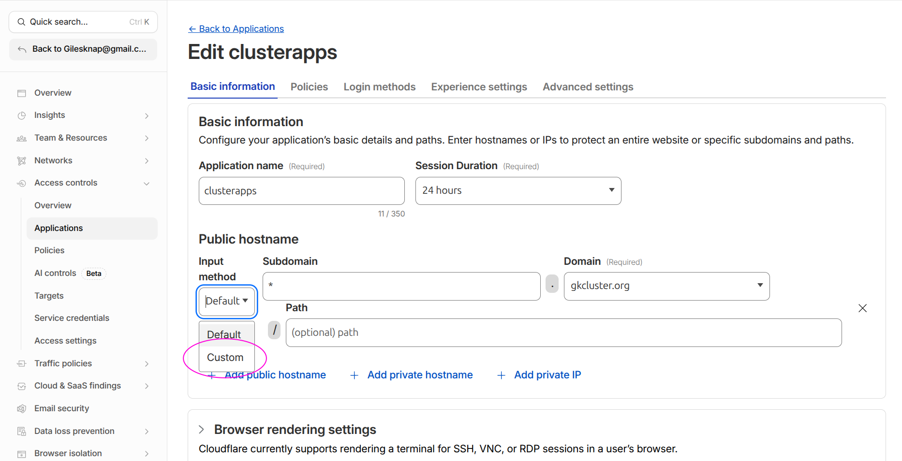

Expose Web Services via Cloudflare Tunnel#
This guide extends the base Cloudflare Tunnel setup to make cluster web services
accessible from the internet through Cloudflare Zero Trust. No inbound firewall
ports are opened — all traffic flows through cloudflared’s outbound connection.
Architecture#
INTERNET (browser)
│
▼ HTTPS
Cloudflare Edge (TLS termination, WAF, DDoS protection)
│ Cloudflare Access policy — identity check before traffic enters tunnel
▼
cloudflared pod (outbound-only tunnel, 2 replicas)
│ HTTP to ingress-nginx (ssl_redirect disabled for tunnelled services)
▼
ingress-nginx
│ auth subrequest to oauth2-proxy (email allowlist)
▼
Backend service (Grafana, Headlamp, Open WebUI, ArgoCD)
│ Native login / RBAC
▼
Authenticated session
Defense in depth — three authentication layers:
Cloudflare Access (edge) — identity verification before traffic reaches the cluster. Recommended for all tunnelled services.
oauth2-proxy (ingress) — GitHub email allowlist. Active when
enable_oauth2_proxyistrue.Native service auth — each service retains its own login and RBAC.
Two Cloudflare dashboards#
This guide uses two separate Cloudflare dashboards — it is easy to get confused between them:
dash.cloudflare.com — the main dashboard for managing DNS zones, WAF rules, tunnels, and general site settings.
one.dash.cloudflare.com — the Zero Trust dashboard for managing Access Applications and security policies.
The steps below will tell you which dashboard to use at each point.
Prerequisites#
A working Cloudflare Tunnel with
cloudflareddeployed in the cluster (Set Up DNS, TLS & Cloudflare Tunnel).The echo service verified working through the tunnel.
oauth2-proxy deployed and working (Set Up OAuth Authentication).
Security assessment#
Before exposing services, consider the risk profile of each:
Service |
Native Auth |
OAuth2 |
Risk if OAuth Bypassed |
|---|---|---|---|
Grafana |
Admin login + user accounts |
Yes |
Low — requires credentials |
Headlamp |
Kubernetes service account token |
Yes |
Low — requires token |
Open WebUI |
User accounts with registration |
Yes |
Low — requires login |
ArgoCD |
Admin password + optional OIDC |
No (SSL passthrough) |
Low — requires credentials |
Services deliberately excluded:
Longhorn — no native authentication. If OAuth is bypassed, an attacker gets full storage admin access. Keep it LAN-only.
RKLlama — internal API consumed by Open WebUI. No reason to expose directly.
Overall risk assessment: The combination of Cloudflare Access + oauth2-proxy + native service auth provides strong defense in depth. The risk is low for a homelab or small-team cluster, provided Cloudflare Access policies are configured. Without Cloudflare Access, security depends entirely on oauth2-proxy and native auth — still reasonable, but adding Access is strongly recommended.
Part 1: Delete existing DNS records#
When you add a route to the tunnel (Part 2), Cloudflare automatically creates a proxied CNAME record for the hostname. However, if a grey-cloud (DNS-only) A record already exists for that subdomain, the auto-creation fails silently and external clients resolve to your private IP instead of the tunnel.
Delete the A records before adding routes so the CNAMEs are created automatically.
In the main dashboard (dash.cloudflare.com):
Select your domain zone.
Go to DNS → Records.
For each service you plan to tunnel (
grafana,headlamp,open-webui,oauth2,argocd), delete the existing A record.
Note
After this change, LAN clients also route through Cloudflare for these services. If you need split-horizon DNS (LAN clients go direct, external clients use the tunnel), configure your local DNS resolver to return the private IPs for these hostnames.
Part 2: Add routes to the tunnel#
In the main dashboard (dash.cloudflare.com):
Navigate to Networking → Tunnels and click on your tunnel name.
Go to the Routes tab (or click View all under Routes on the Overview tab) and click Add route for each service below.
HTTP services (Grafana, Headlamp, Open WebUI, oauth2-proxy)#
These four services use the same origin configuration:
Subdomain |
Domain |
URL |
|---|---|---|
|
|
|
|
|
|
|
|
|
|
|
|
Use http://, not https:// — Cloudflare terminates TLS at its edge and sends
HTTP to cloudflared. The Host header tells ingress-nginx which service to route
to.
Important
The oauth2 hostname must be included. When a user accesses a protected service,
the browser is redirected to oauth2.example.com to complete the GitHub OAuth flow.
If this hostname is not reachable through the tunnel, login fails for all
OAuth-protected services.
ArgoCD (HTTPS origin)#
ArgoCD uses SSL passthrough — it terminates TLS itself on port 443. This requires a different origin configuration:
Subdomain |
Domain |
URL |
|---|---|---|
|
|
|
Under Additional application settings → TLS, enable:
No TLS Verify —
cloudflaredconnects to ingress-nginx’s TLS port but does not verify the internal certificate. This is safe because the connection is entirely within the cluster network.
Note
ArgoCD does not need the enable_cloudflare_tunnel toggle — its SSL passthrough
ingress works differently from the HTTP services. No code changes are needed.
Part 3: Create Cloudflare Access policies (recommended)#
Cloudflare Access adds identity verification at the edge — before traffic even reaches your cluster. This is especially valuable as an additional layer on top of oauth2-proxy.
In the Zero Trust dashboard (one.dash.cloudflare.com):
Navigate to Access controls → Applications.
Click Add an application and select Self-hosted.
You can create a single wildcard application covering all services:
Field |
Value |
|---|---|
Application name |
|
Session duration |
|
Input method |
Custom (switch from Default — this allows wildcards) |
Subdomain |
|
Domain |
|

Switch the Input method dropdown from Default to Custom to enter * in the
Subdomain field.#
Tip
A wildcard policy is simpler to maintain. If you prefer per-service policies, create separate applications for each subdomain. The SSH application from Set Up a Cloudflare SSH Tunnel for Remote Cluster Access can remain separate.
On the Policies tab, create an access policy:
Field |
Value |
|---|---|
Policy name |
|
Action |
|
Include rule |
Emails — add the same addresses as your |
Click Save application.
Bypass application for API endpoints#
Some hostnames serve programmatic API traffic (e.g. supabase-api) that must
not be gated by browser-based email authentication. For these, create a
second Access application with a bypass policy:
In Access controls → Applications, click Add an application → Self-hosted.
Set:
Field |
Value |
|---|---|
Application name |
A descriptive name (e.g. |
Subdomain |
The API hostname (e.g. |
Domain |
|
On the Policies tab, add a policy:
Field |
Value |
|---|---|
Policy name |
|
Action |
Bypass |
Include rule |
Everyone |
Click Save application.
Cloudflare evaluates the most specific hostname match first, so this application takes priority over the wildcard for the API hostname. The API endpoint authenticates via its own mechanism (e.g. an API key header) instead of Cloudflare Access.
Editing existing Access applications#
To find and edit an application you created previously:
In the Zero Trust dashboard (one.dash.cloudflare.com), navigate to Access controls → Applications.
All your applications are listed with their hostnames. Click the application name to open its settings.
Use the tabs at the top (Overview, Policies, Authentication, Settings) to modify the application.
Tip
If you cannot find an application, check the search/filter bar — it filters by application name and URL. Also verify you are in the correct Cloudflare account if you have multiple.
Part 4: Enable the tunnel toggle#
Edit kubernetes-services/values.yaml:
enable_cloudflare_tunnel: true
Commit and push. ArgoCD picks up the change and sets ssl_redirect: false on the
ingresses for Grafana, Headlamp, Open WebUI, and oauth2-proxy. This prevents
redirect loops — Cloudflare sends HTTP to cloudflared, and without this toggle
ingress-nginx would redirect back to HTTPS in a loop.
Note
ArgoCD’s ingress is not affected by this toggle — its SSL passthrough configuration works independently.
Part 5: Verify#
From outside your LAN#
Use a mobile hotspot or VPN to test from outside your home network:
# Each should load the login page (Cloudflare Access, then OAuth/service login)
curl -I https://grafana.example.com
curl -I https://headlamp.example.com
curl -I https://open-webui.example.com
curl -I https://argocd.example.com
Check the OAuth flow#
Open
https://grafana.example.comin a browser.If Cloudflare Access is configured, you see the Access login first.
After Access authentication, oauth2-proxy redirects to GitHub for OAuth.
After GitHub auth, you reach the Grafana login page.
Check cloudflared logs#
kubectl logs -n cloudflared deployment/cloudflared --tail=20
Look for connection entries referencing your service hostnames.
Verify ssl-redirect is disabled#
kubectl get ingress -A -o json | \
jq '.items[] | select(.metadata.annotations["nginx.ingress.kubernetes.io/ssl-redirect"] == "false") | .metadata.name'
Expected: ingresses for grafana, headlamp, open-webui, and oauth2-proxy.
Reverting to LAN-only#
To take services back off the internet:
Set
enable_cloudflare_tunnel: falseinkubernetes-services/values.yaml, commit and push.Delete the public hostnames from the tunnel configuration in the Zero Trust dashboard.
Delete the Cloudflare Access application if no longer needed.
In DNS → Records, delete the proxied CNAMEs and re-add grey-cloud A records pointing to your worker node IPs.
Troubleshooting#
Redirect loop (ERR_TOO_MANY_REDIRECTS)#
The most common cause is ssl_redirect still set to true. Verify:
kubectl get ingress -n <namespace> <service>-ingress -o yaml | grep ssl-redirect
Should show "false" when enable_cloudflare_tunnel is true. If not, check that
ArgoCD has synced the latest values.
OAuth login fails from outside LAN#
Ensure the oauth2 hostname is included in the tunnel public hostnames. The
browser must be able to reach oauth2.example.com to complete the GitHub OAuth
flow.
OIDC discovery fails (invalid JSON / HTML response)#
Services that use Dex for OIDC (Headlamp, Grafana, Open WebUI) fetch the
discovery document from https://argocd.<domain>/api/dex/.well-known/openid-configuration.
When Cloudflare manages DNS, pods resolve this to Cloudflare IPs and the request
hairpins through the tunnel, often returning a Cloudflare Access HTML page instead
of JSON.
The fix is split-horizon DNS: the --tags cluster playbook creates a
coredns-custom ConfigMap that makes argocd.<domain> resolve to the NGINX
ingress ClusterIP from inside the cluster. If you see this error after a fresh
cluster build, run ansible-playbook pb_all.yml --tags cluster.
502 Bad Gateway on ArgoCD#
Check that the ArgoCD tunnel hostname uses HTTPS origin (not HTTP) with
No TLS Verify enabled. ArgoCD’s SSL passthrough requires a TLS connection from
cloudflared.
403 Forbidden after authenticating#
Check the oauth2-proxy email allowlist in kubernetes-services/values.yaml under
admin_emails. The email on your GitHub account must match an entry in this list.
LAN access stops working#
If you deleted the A records (Part 2), LAN clients now route through Cloudflare. This usually works but adds latency. For direct LAN access, configure your local DNS resolver to return private IPs for the service hostnames.
See also#
Set Up DNS, TLS & Cloudflare Tunnel — Base tunnel setup and per-service tunnel instructions
Set Up a Cloudflare SSH Tunnel for Remote Cluster Access — SSH tunnel with Cloudflare Access
Set Up OAuth Authentication — In-cluster OAuth configuration